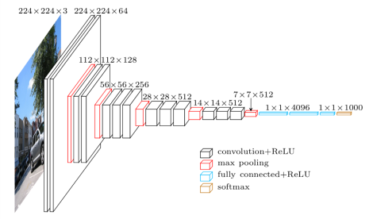
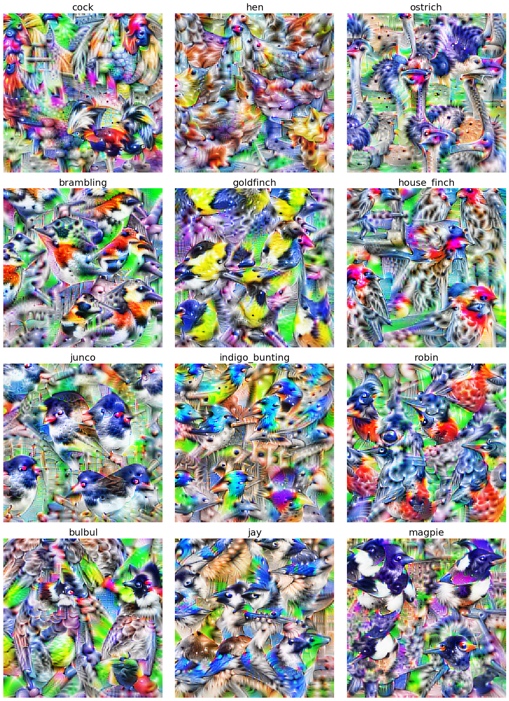

Visualizing features, receptive fields, and classes in neural networks from "scratch" with Tensorflow 2. Part 1: Visualizing classes
Posted on Tue 19 May 2020 in Neural networks
Summary¶
I spent some time playing around with visualizing neural network features and artificial neuron receptive fields using Tensorflow 2.X. I wrote this code because I wanted to visualize the neural network features for a project I'm currently working on, but the best library out there (Lucid) is written for Tensorflow 1.X. In my implementation, I provide a self-contained Jupyter notebook that visualizes features for the VGG16 convolutional neural networks (these methods would translate to any network). I didn't read very much into how other people have done feature visualizations, so there is likely some overlap, but some of the methods I use might be novel.
There are a few sections to this series:
Network outline¶
The network we're going to use here is VGG16, a classic neural network architecture that performs very well on the ImageNet dataset. VGG16 is very simple, it's just a few convolutional layers mixed with max pooling layers, and finally a few fully connected layers.

VGG network outline. (image source)
Synthesizing images that maximally activate class labels¶
I'm going to start with visualizing class labels because I think that these visualizations are the most visually intuitive: they are somewhat reminiscent of things you will see in real life. The point of this method is to start with an image of random noise, then iteratively manipulate that noise until it maximally activates a class label in an artificial neural network. In other words, we are shifting the pixels around in an image until the neural network thinks it looks like the thing it was trained to perceive (for example, a dog, cat, or firetruck). The network is trained to know what these images look like, so it expects to see certain features in that image. By manipulating the image to be percieved as that class (e.g. dog) the image will begin to possess features of that image (e.g. ears, paws).
The main technique here is just generating a random, and then performing gradient ascent on that image until your neuron of interest in the network is maximally activated. There are some tricks to that though. The main one (in my experience) is manipulating the the frequency of the features the network is interested in. If you train directly from noise, the network will mostly care about high-frequencies, and the resulting image won't have very much global coherency. To deal with this, I ended up doing two things: (1) gradually zooming in over each iteration of training. and (2) blurring the image between each epoch of training. As a result, the generated images look a little airbrushed, but you can see some more global structure, for example entire heads or bodies of birds.
Below, you can see some synthesized images for a few ImageNet classes from the VGG16 network.

Classes visualized from a pretrained VGG network
The synthesized images end up looking like textures. By changing the amount of bluring and zooming you do, you can manipulate the level of detail of the textures (this also changes the high-frequency vs airbrush look of the synthesized images).
We can also visualize those classes during each step of gradient ascent.
VGG classes for each step of synthesis
Just for fun, here's one of a few classes of birds:

Bird textures synthesized from VGG16 classes.
All the code needed to reproduce these images and videos are available in self contained Jupyter notebooks.
In the next section, we'll try something similar to visualize filters and receptive fields throughout different layers of the network. Thanks for reading.